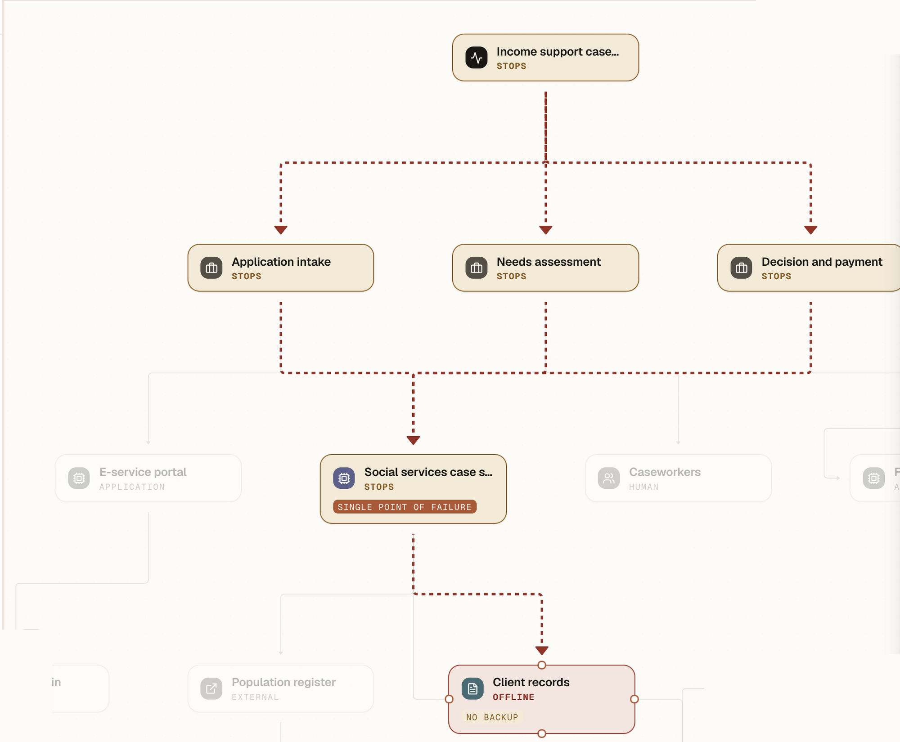

Cyberkrisen i Kalix kommun
Arbetstitel — hälsa välkommen, presentera dig kort som doktorand vid LTU, och sätt ramen för vad föreläsningen kommer handla om.
Vem räddade egentligen Kalix kommun?
Ställ frågan högt och låt tystnaden sitta kvar en stund innan du går vidare — inget svar förväntas här och nu. Möjliga svar som brukar komma upp: IT-avdelningen (de stoppade spridningen och byggde om), ledningen (de höll ihop organisationen och tog de stora besluten), eller personalen längst ut i verksamheten (de höll vården igång för hand). Alla tre är rimliga — men vi knyter ihop det riktiga svaret på den sista bilden.

Anton Holmström
Doktorand, informationssäkerhet — Institutionen för system- och rymdteknik
Forskar på cyberresiliens — hur organisationer motstår, återhämtar sig från och anpassar sig efter cyberincidenter, med fokus på den mänskliga faktorn.
Kort presentation — vem du är, vad du forskar på, och varför cyberresiliens och den mänskliga faktorn är relevant för dagens ämne.
Kalix kommun, december 2021
En storskalig ransomware-attack slog ut kommunens IT-system över natten och tvingade hela socialförvaltningen tillbaka till papper och penna.
 Kalix kommun, Norrbotten
Kalix kommun, Norrbotten
Kort bakgrund: natten mellan 15–16 december 2021 upptäcktes en storskalig ransomware-attack mot Kalix kommun (~15 500 invånare, Norrbotten). Attacken krypterade nästan alla servrar, tvingade IT att bygga om infrastrukturen från grunden och satte hela socialförvaltningen i analogt läge under flera veckor.
Presentera strukturen för resten av föreläsningen: vi går igenom de tre perspektiven i tur och ordning — IT, ledning, socialförvaltning — och landar sedan i vad vi kan lära oss och koppla till vårt eget säkerhetsarbete.
Vad bygger det här på?
Understryk att detta inte är en anekdot — det är en fallstudie byggd på 19 semistrukturerade intervjuer med nyckelpersoner inom IT, ledning och socialförvaltning, där flera intervjuades både initialt och i uppföljning. Det kompletteras med polisrapport, interndokumentation, mediebevakning och konsultrapporter för att kunna trianguleras mot varandra.
Det tekniska händelseförloppet
Gå igenom kedjan steg för steg: angriparen kommer in via ett komprometterat konto (troligen läckt lösenord, brute force eller password spray — exakt metod är okänd), eskalerar till domänadmin, tar sig in via VPN, och får därmed full åtkomst till Active Directory och servrar.
Därifrån går de åt två håll: uppåt mot klienterna för att inaktivera endpoint-skydd via Group Policy, och nedåt för att skapa ett dolt extra domänadminkonto som säkerhet. Slutligen hämtas och körs ransomware via PsExec, initierat utifrån.
Vägen tillbaka till drift
Gå igenom stegen kort — betona särskilt steg 3 (isolerad återställning, för att inte återinfektera) och steg 5 (man byggde inte tillbaka det gamla, utan passade på att modernisera med molntjänster och nätverkssegmentering). Koppla till att detta tog flera veckor i verkligheten, se tidslinjen i artikeln om ni vill gå djupare.
Beslut under press
Ledningen (kommundirektören) förstod snabbt att detta inte var en vanlig driftstörning och aktiverade stabsläge samma förmiddag, med krismöten två gånger per dag under den mest intensiva perioden.
Man valde att vara proaktivt öppna med information för att inte lämna fält för rykten — presskonferenser redan samma eftermiddag/kväll. Det mest avgörande beslutet var att inte bara laga det gamla nätverket utan bygga om hela IT-miljön i grunden (moln, segmentering) — en investering på cirka 2,5 miljoner kronor i direkta kostnader, mestadels konsultarvoden, som man såg som rimlig givet vad de just varit med om.
Öppenhet som strategi
Kommunen valde total transparens — kontinuerlig information till både medarbetare och medborgare, även när de digitala kanalerna låg nere.
Den centrala krisledningsgruppen bestod av kommundirektören, säkerhetschefen och representanter från varje förvaltning, och möttes regelbundet — säkerhetschefen ledde arbetet med att löpande kartlägga vilka delar av verksamheten som var drabbade.
Flera intervjuade (bland andra chefen för socialförvaltningen) lyfte fram att krisen faktiskt gav en ökad öppenhet och transparens i organisationen som varken fanns eller efterfrågades på samma sätt innan. Poängen att ta med sig: transparens var inte bara kommunikation utåt, det var även en arbetsmetod internt — man tvingades jobba analogt och synligt, på whiteboard, i brist på fungerande digitala verktyg.
Konsekvensen av en avstängning
Den här kopplingen är viktig att göra tydlig: det var inte ransomwaren i sig som tvingade socialförvaltningen analogt, utan IT:s egna motåtgärd — att stänga av hela det interna nätverket för att stoppa spridningen och säkra bevis. En rimlig och nödvändig teknisk åtgärd, men med en direkt praktisk konsekvens för hela den kommunala verksamheten, inte minst vården.
Nästa bilder går igenom hur det faktiskt gick till i praktiken på socialförvaltningen.
Vården på minnet
Redan på förmiddagen bestämde sig enhetschefer och personal för att jobba helt analogt — och prioritera det som inte kunde vänta: mediciner och måltider.
- Hemtjänstpersonal förlitade sig på minne och tidigare erfarenhet — systemen var helt nere
- Att samordna vikarier blev extra svårt mitt i julledigheter, i en redan vikarietung verksamhet
Understryk hur omedelbart omställningen skedde — redan förmiddagen den 16:e organiserade enhetschefer och anställda tillsammans scheman och prioriterade vårdinsatser för hand, med fokus på det livsviktiga: mediciner och måltider.
Sekretesstunne-detaljen är en bra konkret bild att dröja vid: en enhetschef letade bokstavligen i papperskorgarna för sekretessbelagt material (på väg till dokumentförstöring) efter gamla patientlistor och scheman — allt digitalt var borta.
Vikariesamordningen var extra jobbig eftersom attacken skedde strax före jul, när många ordinarie var lediga — att analogt hålla koll på vem som skulle vart och när blev en stor logistisk utmaning.
Mobilen som livlina
Med systemen nere blev mobiltelefonen förvaltningens enda fungerande kanal.
Kommunikationen var en av de största utmaningarna för socialförvaltningen under krisen — inte teknisk kommunikation, utan den mänskliga: att hålla ihop planeringen när ingen kunde maila eller logga in någonstans.
Glöm inte kontexten: detta hände mitt under coronapandemin, som redan pressade vårdpersonalen. Flera rapporterade också att den ökade medienärvaron gjorde situationen jobbigare rent personligt, utöver själva krisarbetet.
Ett nytt normalläge
Systemen återställdes stegvis under flera veckor.
Avsluta socialförvaltningens del på den här mer hoppfulla noten: trots allt gick det stegvis mot det bättre. Den 10 januari 2022 — nästan en månad efter attacken — var de flesta IT-system tillräckligt stabila för att verksamheten skulle kunna återgå till ett mer normalt läge.
Men understryk att "normalt" var relativt: mindre störningar fortsatte ytterligare en tid, och personalen fick hålla i den höga beredskapen längre än man kanske hade önskat.
En avdelnings beslut, hela organisationens problem
Krisen visade hur tätt sammankopplade kommunens delar egentligen var — vad IT gjorde för att skydda systemen fick direkta konsekvenser långt bortom IT.
Det här är den röda tråden i studiens analys (Holmström, 2025): en teknisk åtgärd i ett hörn av organisationen (IT stänger nätet för att stoppa spridningen) fick en kaskadeffekt som slutade i en verksamhetsrisk i ett helt annat hörn (patientvården). Samma sak gällde ledningens sida — deras krisaktivering och resursallokering var lika avgörande som IT:s tekniska arbete.
Poängen att landa: ingen enskild avdelning "äger" cyberresiliens. Det är en systemegenskap som uppstår ur hur avdelningarna samverkar under press.
Två typer av motståndskraft
Krisledningens planer och undersköterskornas improvisation löste olika delar av samma kris — båda behövdes.
Formell resiliens
Krisledningsgruppen, tidigare krisövningar och dokumenterade planer gav strukturen på ledningsnivå.Informell resiliens
Frontlinjepersonalens vardagsflexibilitet, erfarenhet och improvisation blev de faktiska verktygen längst ut i verksamheten.Holmström och Große (2025) beskriver detta som två helt olika lager av organisationen som förlitade sig på olika typer av resiliens — en formell och procedurbaserad, en praktisk och kroppsligt förankrad. Krisövningarna innan attacken gav struktur åt ledningsnivån, men det var undersköterskornas och enhetschefernas förmåga att improvisera för hand som faktiskt höll vården igång dag för dag.
Gruppsammansättning spelade också roll — arbetsgrupper med fler vikarier eller nyanställda hade det tyngre, vilket pekar på erfarenhet och lagsammanhållning som en resiliensfaktor i sig.
Analogt är inte omodernt — det är en livlina
Beroendet av digitala system hade tagits för givet, ända tills det blev krisens största sårbarhet.
- Kritiska processer behöver en analog reservväg — inte bara en teknisk backup
- Kommunikationskanaler behöver redundans, precis som system — ”call chains” och fysiska möten ersatte mejl och inloggning
- Viktig information (scheman, patientlistor) bör kunna finnas i icke-digitalt format, inte bara i molnet
Det här är kärnan i avsnitt 5.2 i Holmström och Große (2025): organisationer måste identifiera vilka kritiska processer som är starkt digitalt beroende och säkerställa att fungerande reserver finns — både analoga och digitala. Redundans handlar inte bara om servrar, utan lika mycket om kommunikationsvägar.
Lärdomar som fastnar — eller inte
Krisen väckte säkerhetsmedvetenheten hos personalen. Men utan systematisk uppföljning bleknade den igen.
En av de mer oroande observationerna i Holmström och Große (2025): medvetenheten som väcktes av krisen (papper i bakfickan, allmän vaksamhet) klingade successivt av när minnet av krisen blev mindre närvarande, i brist på systematisk uppföljning. Uppföljningen som gjordes var till stor del teknisk och isolerad till IT — vilket innebar att värdefulla erfarenheter från socialförvaltningens golv aldrig samlades in eller spreds vidare.
Forskarnas rekommendation: involvera frontlinjepersonal (undersköterskor, enhetschefer) direkt i risk- och kontinuitetsplaneringen — de ser konsekvenserna av digitala avbrott som ledningen och IT annars missar.
Att se sårbarheten i förväg

Det här är mitt eget försök att omsätta fallstudiens lärdom i något praktiskt användbart: map.aholmstrom.se, ett verktyg där man kartlägger en verksamhets affärsprocesser, system, data, människor och information för att se hur arbetsuppgifterna faktiskt hänger ihop — och var sårbarheterna sitter innan något händer.
Bilden visar Kalix-fallet återskapat i verktyget i efterhand: försörjningsstödsprocessen (ansökan, behovsbedömning, beslut/utbetalning) bryter ner till ett och samma ärendehanteringssystem — markerat som single point of failure — som i sin tur är beroende av ett klientregister utan digital backup. Exakt den sårbarheten som gjorde att hela socialförvaltningen fick gå över till papper och penna när systemen krypterades.
Poängen att lyfta: hade den här typen av kartläggning funnits innan attacken, hade sårbarheten synts i förväg — inte först efteråt.
Vad kan vi ta med oss?
- Cyberresiliens är hela organisationens ansvar — inte bara IT:s
- Formell planering och informell improvisation löser olika delar av samma kris — ni behöver båda
- Analog redundans är inte omodernt — det är det som håller verksamheten igång när det digitala inte gör det
- Lärdomar fastnar bara om uppföljningen är systematisk och når hela organisationen — inte bara IT
Sammanfatta kort de fyra lärdomarna innan diskussionsfrågorna. Ge det ett ögonblick att sätta sig — detta är den del av föreläsningen publiken bör ta med sig.
En fråga att ta med er
- Om er organisation bara fick investera i EN åtgärd inför nästa kris — en ny brandvägg, analoga reservrutiner för de mest kritiska processerna, eller krisövningar som inkluderar frontlinjepersonal — vilken väljer ni? Och varför är det egentligen ett dåligt val, oavsett vilket ni väljer?
- Vet ni vilka av era processer som skulle stanna helt om det digitala försvann imorgon — och vem som skulle upptäcka det först?
Ge publiken faktisk tid att fundera — det här är avsett att kännas som ett dilemma utan ett rent svar, inte en quiz med rätt svar. Poängen med den första frågan: varje enskilt val är ofullständigt, vilket är precis lärdomen från Kalix — resiliens byggs av flera saker samtidigt, inte en investering.
Vem räddade Kalix kommun?
IT stoppade spridningen. Ledningen höll ihop organisationen. Men det var något annat som gjorde att kommunen aldrig kollapsade.
Detta är nästan en direkt återgivning av slutsatsen i Holmström och Große (2025): "It was not with the help of, but thanks to, the effort of the employees that the organization was able to avoid a total collapse of business functions critical to the citizens." Låt den sitta kvar ett par sekunder innan du går vidare till tack-bilden.
Tack för att ni lyssnade
Frågor, tankar eller något ni vill grotta ner er mer i? Hör av er.
Avsluta med att öppna för frågor. Nämn gärna att fallstudien bygger på två publicerade artiklar (Holmström, 2025 och Holmström & Große, 2025) för den som vill läsa vidare eller använda caset i egen undervisning.